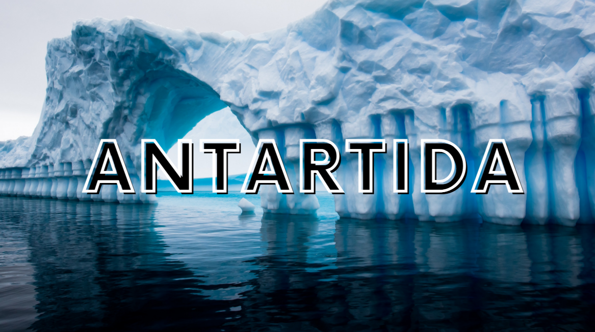

Paises que reclaman soberania en la antartida
- Argentina
- Chile
- Noruega
- Australia
- Francia
- Nueva Zelanda
- Reino Unido

La Antártida es un continente cubierto en su mayoría por hielo y glaciares. Se extiende sobre una superficie de aproximadamente 14 millones de kilómetros cuadrados, lo que lo convierte en el quinto continente más grande del mundo.
TOPOGRAFIA: La Antártida es un continente mayormente cubierto por una gruesa capa de hielo, que forma el casquete polar antártico. Bajo este hielo se encuentran montañas, valles y una geografía accidental. La Cordillera Transantártica se extiende a lo largo de la Antártida y es la principal cadena montañosa del continente.
CAPA DE HIELO: El casquete polar antártico contiene aproximadamente el 90% del hielo del mundo y alberga la mayor reserva de agua dulce del planeta. El espesor del hielo puede alcanzar varios kilómetros en algunas áreas, y su peso ha causado que la tierra debajo de se hunda, formando cuencas conocidas como subglaciares.
GLACIARES: Los glaciares son corrientes de hielo que fluyen desde el interior hacia las costas de la Antártida. Algunos glaciares son impresionantes en tamaño, como el Glaciar Lambert, uno de los glaciares más grandes del mundo, con más de 400 kilómetros de longitud y hasta 100 kilómetros de ancho.

LAGOS Y RIOS SUBGLACIARES: Bajo la capa de hielo antártico, existen lagos y ríos subglaciales, algunos de los cuales son conocidos como lagos "hiperácidos" debido a su alta acidez. Estos cuerpos de agua se forman por el derretimiento del hielo debido al calor geotérmico del interior de la Tierra.
ISLAS: Aunque la mayoría de la Antártida es un continente, también incluye numerosas islas más pequeñas que se encuentran en las regiones costeras. Algunas de las islas más grandes son la Isla de Ross, la Isla Alejandro I y la Isla de Pedro I.

PATAFORMA DE HIELO Las plataformas de hielo son extensiones de hielo flotante que se forman cuando los glaciares se desplazan hacia el mar. Algunas de las más grandes son la Plataforma de Hielo Ross y la Plataforma de Hielo Ronne. Estas plataformas son importantes para el equilibrio del hielo continental, ya que frenan el flujo de hielo hacia el océano.
La Antártida no pertenece a ningún país en particular y está destinada para el uso científico y pacífico de todas las naciones. El Tratado Antártico, firmado en 1959, establece un marco para regular la actividad humana en la región y promueve la cooperación científica entre países.
La Antártida es el lugar más frío de la Tierra. Las temperaturas pueden alcanzar extremos de hasta -80 °C durante el invierno. La mayor parte del continente es un desierto frío y seco, con una precipitación anual muy baja.
TEMPERATURAS: La Antártida es el lugar más frío de la Tierra. Durante el invierno, las temperaturas promedio oscilan entre -40 °C y -70 °C, y en algunas áreas, pueden caer a niveles aún más bajos, llegando a valores cercanos a -80 °C. En el verano, las temperaturas son relativamente más suaves, pero aún así, en promedio, se mantienen alrededor de -20 °C a -30 °C. (exagerado)
FENOMENO DE LA "NOCHE POLAR" Y EL "DIA POLAR": Debido a la inclinación del eje de la Tierra, la Antártida experimenta fenómenos conocidos como "noche polar" y "día polar". Durante el invierno, el continente se encuentra en oscuridad continua y no recibe luz solar durante varios meses. Por otro lado, en verano, la región experimenta la "noche blanca", donde el sol nunca se pone y la luz solar es continua durante varios meses.

CALENTAMIENTO GLOBAL: La Antártida es especialmente sensible a los efectos del calentamiento global. Aunque es un lugar extremadamente frío, las temperaturas están aumentando más rápidamente en esta región que en otras partes del mundo. Esto ha llevado al derretimiento de algunas capas de hielo y al colapso de algunas plataformas de hielo, lo que contribuye al aumento del nivel del mar a nivel global.
El clima extremo de la Antártida presenta desafíos únicos para la vida humana y la investigación científica en la región. Las bajas temperaturas y las condiciones climáticas difíciles hacen que la vida aquí sea muy exigente, y la investigación científica en este ambiente extremo es crucial para comprender mejor el cambio climático global y sus efectos.
A pesar de las condiciones extremadamente duras, la Antártida es el hogar de una variedad de vida animal. Entre los animales más conocidos se encuentran los pingüinos, focas, ballenas y aves marinas. Estas especies están adaptadas a la vida en el frío y se alimentan principalmente de peces y kril.
PINGUINOS: Los pingüinos son probablemente las criaturas más emblemáticas de la Antártida. Se pueden encontrar varias especies, como el pingüino emperador, el pingüino Adelia, el pingüino de barbijo y el pingüino papúa. Estas aves no voladoras son excelentes nadadores y se alimentan principalmente de peces y kril (pequeños crustáceos marinos).
FOCAS: Las focas también son comunes en la Antártida. Entre las especies que se encuentran aquí se incluyen la foca de Weddell, la foca cangrejera, la foca leopardo y la foca de Ross. Estos mamíferos acuáticos pasan gran parte de su vida en el mar, donde se alimentan de peces y otros animales marinos.
BALLENAS: Varios tipos de ballenas migran a las aguas antárticas para alimentarse durante el verano. Entre las especies más conocidas se encuentran la ballena jorobada, la ballena azul, la ballena de Minke y la ballena orca (o asesina). Estas ballenas se alimentan de grandes cantidades de kril y otros pequeños organismos marinos.

AVES MARINAS: La Antártida es el hogar de numerosas especies de aves marinas, incluyendo petreles, albatros, cormoranes y págalos. Estas aves se reproducen en la Antártida durante el verano y migran hacia áreas más cálidas durante el invierno.
KRIL: Aunque técnicamente no es fauna, el kril es una especie clave en la cadena alimentaria antártica. Estos pequeños crustáceos se encuentran en enormes cantidades en las aguas antárticas y son una fuente de alimento vital para muchos animales, desde peces hasta ballenas.

INVERTEBRADOS: Aunque no son tan visibles como los pingüinos o las focas, la Antártida también es hogar de diversos invertebrados que han desarrollado adaptaciones únicas para sobrevivir en condiciones extremadamente frías. Entre ellos se encuentran gusanos, arañas, caracoles, musgos y líquenes.
Es importante destacar que la vida en la Antártida es frágil y está altamente adaptada a un ambiente particularmente hostil. Cualquier perturbación en el equilibrio ecológico de la región puede tener un impacto significativo en la fauna y el ecosistema antártico en su conjunto.
La conservación de la fauna antártica es fundamental, y es por eso que existen condiciones y tratados internacionales destinados a proteger y preservar este ecosistema único para las generaciones futuras.
La Antártida es un destino crucial para la investigación científica. Numerosos países mantienen bases de investigación en el continente para estudiar el clima, la geología, la biología y la atmósfera. Esta investigación es esencial para comprender mejor el cambio climático y otros fenómenos globales.
OBJETIVOS DE INVESTIGACION: La investigación en la Antártida una amplia gama de disciplinas científicas abarca, que incluyen pero no se limitan a la climatología, la glaciología, la biología marina, la oceanografía, la astrofísica, la geología, la ecología, la meteorología, la investigación espacial y la investigación atmosférica. Los científicos estudian el hielo, la atmósfera, el océano y la vida silvestre para comprender mejor el cambio climático, la evolución del continente, los ecosistemas únicos y mucho más.
ESTACIONES DE INVESTIGACION: Varios países mantienen estaciones de investigación en la Antártida. Estas estaciones son centros de investigación donde los científicos viven y trabajan durante períodos que van desde algunos meses hasta todo el año. Cada estación suele enfocarse en áreas específicas de investigación, y algunas son operadas de forma conjunta por diferentes países.

PROYECTOS INTERNACIONALES: La colaboración internacional es esencial en la investigación antártica. Muchos proyectos de investigación son emprendidos por equipos de científicos de diferentes países, trabajando juntos para abordar preguntas complejas y compartir conocimientos y recursos.
La Antártida tiene un papel crítico en el sistema climático de la Tierra. Los enormes glaciares y mantos de hielo contienen aproximadamente el 70% del agua dulce del planeta. Si se derritieran completamente, elevarían el nivel del mar significativamente, desaparecerían a las costas de todo el mundo.